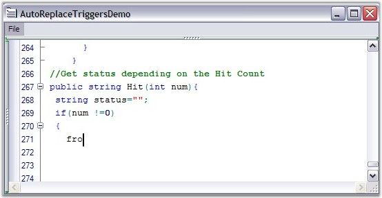
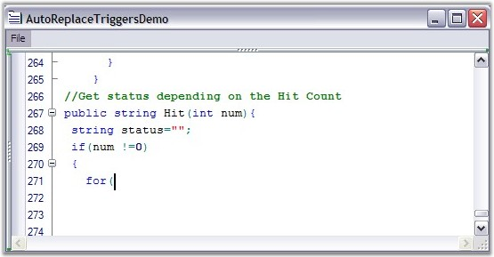

The Edit Control comes with the AutoReplace Triggers feature which allows the control to automatically correct some of the known predefined typing errors. AutoReplace Triggers are fired when certain keys are pressed. These keys are defined within the language definition. When the AutoReplace Trigger key is pressed, the editor checks the word before the AutoReplace Trigger, to see if it is in the AutoReplace table. If it is present, then the word is automatically replaced with its replacement word.
The AutoReplace Trigger keys are defined within the language definitions. This means that different keys can be defined as triggers for different languages.

Figure 12: "for" has been incorrectly typed as "fro"

Figure 13: After typing '(' the incorrect token "fro" is replaced with the correct token "for"
AutoReplace Triggers can be enabled by using the UseAutoreplaceTriggers property as shown below.
|
[C#]
// Enables AutoReplace
Triggers. |
|
[VB.NET]
' Enables AutoReplace
Triggers. |
The keys used as AutoReplace Triggers are defined by using the TriggersActivators attribute of the language in the configuration file, as shown below.
|
<ConfigLanguage name ="C#" Known ="Csharp" StartComment ="//" TriggersActivators =" ;.=()"> |
Triggers can be flagged as valid only within the specific lexical states. For example, you can set a trigger not to fire, if it is in a comment within a language, by using the AllowTriggers attribute, as shown below.
|
<lexem BeginBlock="/* EndBlock="*/" Type="Comment" OnlyLocalSublexems="true" IsComplex="true" IsCollapsable="true" CollapseName="/*...*/" AllowTriggers="false"> |
The words to be replaced when the AutoReplace Triggers key is pressed can be defined by using the code given below.
|
[C#]
this.editControl1.Language.AutoReplaceTriggers.AddRange(new AutoReplaceTrigger[]{new AutoReplaceTrigger("tis","this"),new AutoReplaceTrigger("fro","for")}); |
|
[VB.NET]
Me.editControl1.Language.AutoReplaceTriggers.AddRange(New AutoReplaceTrigger(){New AutoReplaceTrigger("tis","this"),New AutoReplaceTrigger("fro","for")}) |
The words to be replaced can also be defined within the language definition in the configuration file, as shown below.
|
<AutoReplaceTriggers> <AutoReplaceTrigger From ="tis" To ="this" />
<AutoReplaceTrigger From ="itn" To ="int" /> </AutoReplaceTriggers> |
See Also